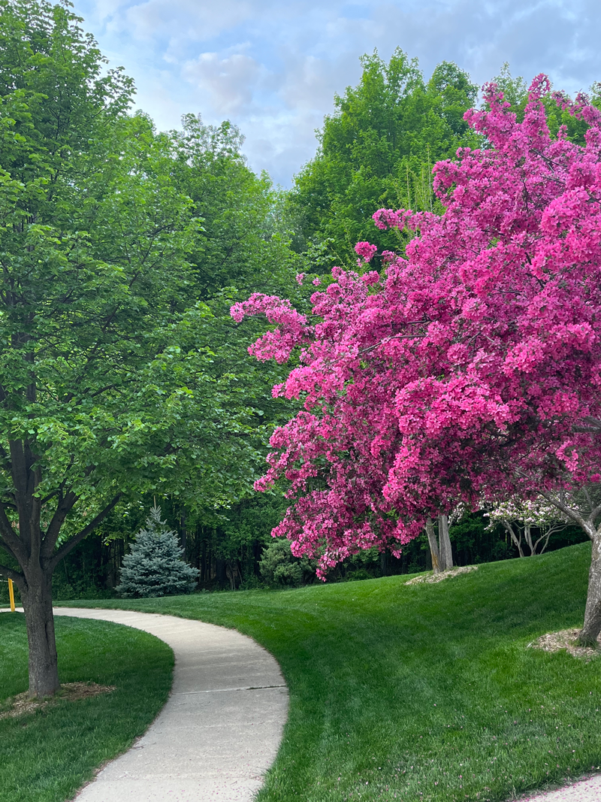
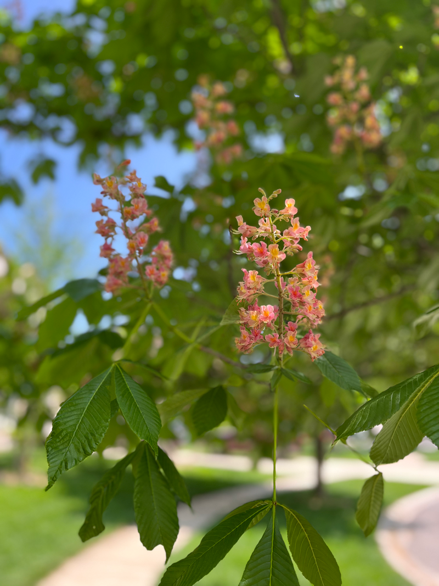
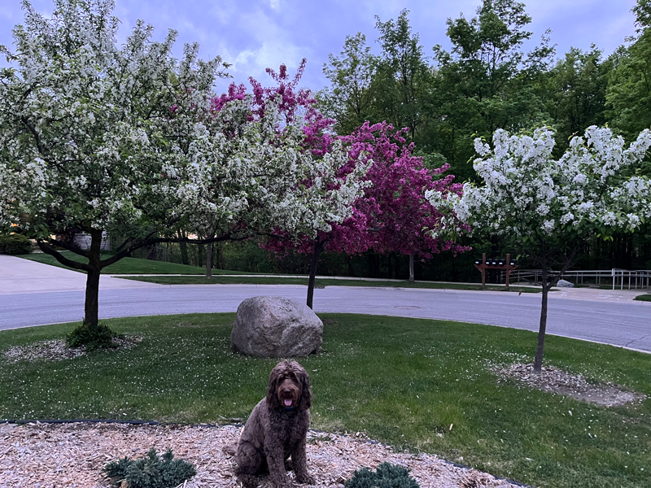

These are some of the beautiful scenes you can find while walking around the neighborhoods of Ann Arbor. From blooming trees to colorful tulips, each walk has its own charm. Walking my dog Bacon in these neighborhoods is always a pleasure.


